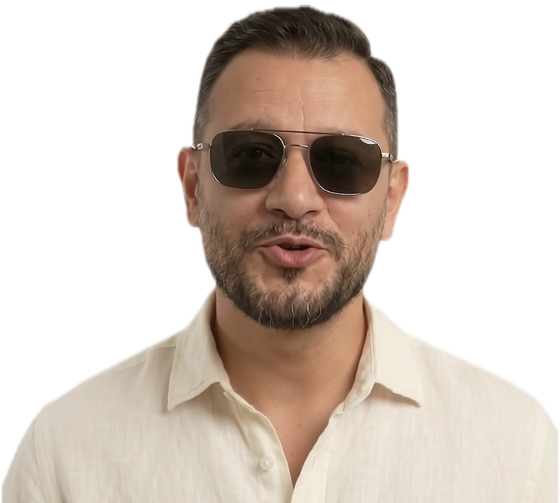

Kazablanka Turu: Tarih, Kültür, Gece Hayatı
Kazablanka: Fas'ın kalbi, Atlas'ın beyaz şehri.
Devamını oku →
Fas • Mısır • Balkanlar • Asya
Herkese uygun tatil seçenekleri. Yol arkadaşınız sizi rotaya götürsün.
Yolculuk İstanbul'dan başlıyor: Kazablanka, Rabat, Şafşavan, Fes, Marakeş.
Yerinizi şimdiden ayırtmak için talebinizi bırakın.
Güncel tarih, fiyat ve kontenjan bilgisi için ekibimize ulaşın; ilgilendiğiniz rotayı yazın, size dönüş yapalım. Önceki dönem programlarını incelemek için Turlar sayfasına göz atabilirsiniz.
Fas turlarıyla yola çıktık: Kazablanka, Marakeş, Fes ve daha fazlası.

Avrupa'dan Asya'ya, Mısır'dan Amerika'ya farklı rotalar sizi bekliyor.
Her rotanın bir ruh hâli var. Dinlemek için bir parçaya dokunun; ses yalnız siz başlatınca çalar.
Yola çıkmadan önce rotanın havasını dinleyin.
Sitede online ödeme ve üyelik yoktur; bilgi ve rezervasyon talebiniz ekibimize ulaşır.
Turlar sayfasından rotanıza ve süreye göre filtreleyin, programı inceleyin.
Formu doldurun ya da WhatsApp / telefonla ulaşın. Kişi sayısı ve tarih tercihinizi yazmanız yeterli.
Güncel tarih, fiyat ve kontenjan bilgisini ekibimiz sizinle paylaşır.
Fas turlarıyla yola çıktık; bugün farklı kıtalara kişisel ve grup turları düzenliyoruz. Her rotayı titizlikle planlıyor, her ayrıntıyı özenle düşünüyoruz.
Her adımda misafir memnuniyetini ön planda tutarız.
Rezervasyon ve ücretlendirmede açık olmayı ilke ediniriz.
Seçtiğimiz ortaklar ve hizmetlerle kaliteyi gözetiriz.
Veri güvenliği ve seyahat emniyeti önceliğimizdir.
Kazablanka: Fas'ın kalbi, Atlas'ın beyaz şehri.

Fes'teki Karaouïne Üniversitesi: dünyanın en eski eğitim kurumlarından biri.

Japonya'ya gitmeden önce bilmeniz gerekenler: şehirler, lezzetler ve ipuçları.
Fotoğraflı anılar ve yorumlar, misafirimizin izniyle burada yer alacak. Anınızı bize WhatsApp'tan ya da talep formundan iletebilirsiniz; ayrıca Instagram hesabımızda da yolculuk karelerimizi bulabilirsiniz.
Formu doldurun ya da WhatsApp'tan yazın; ekibimiz size dönüş yapsın.